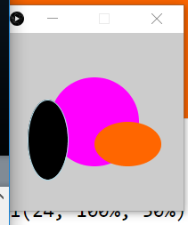
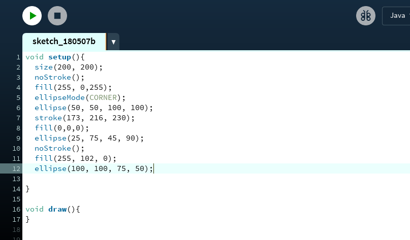
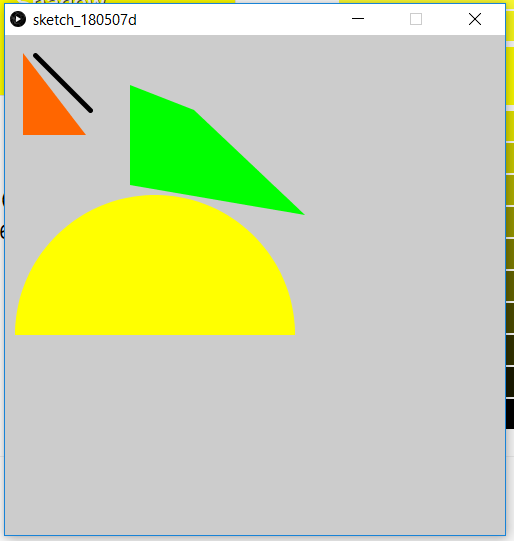
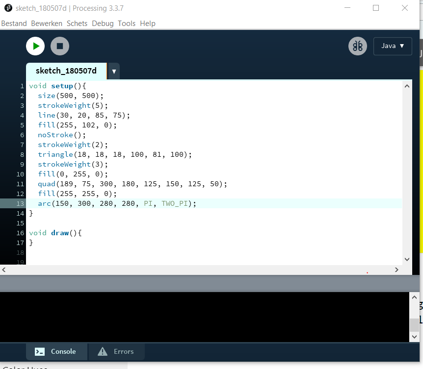
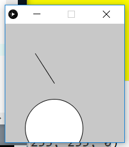
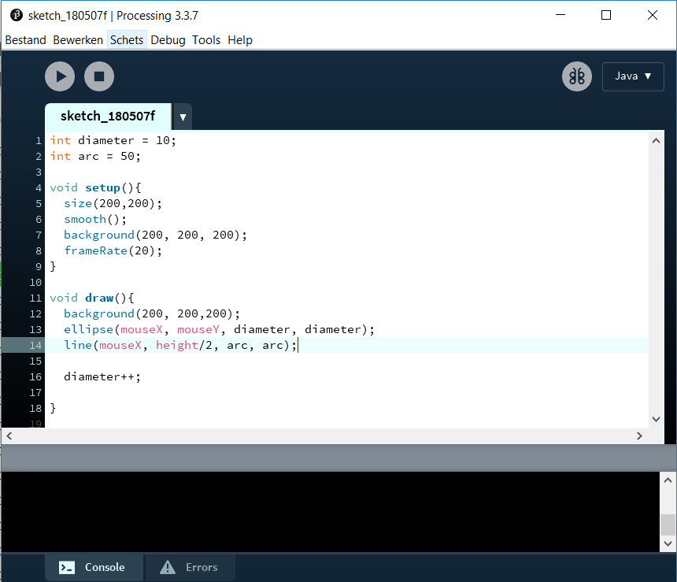
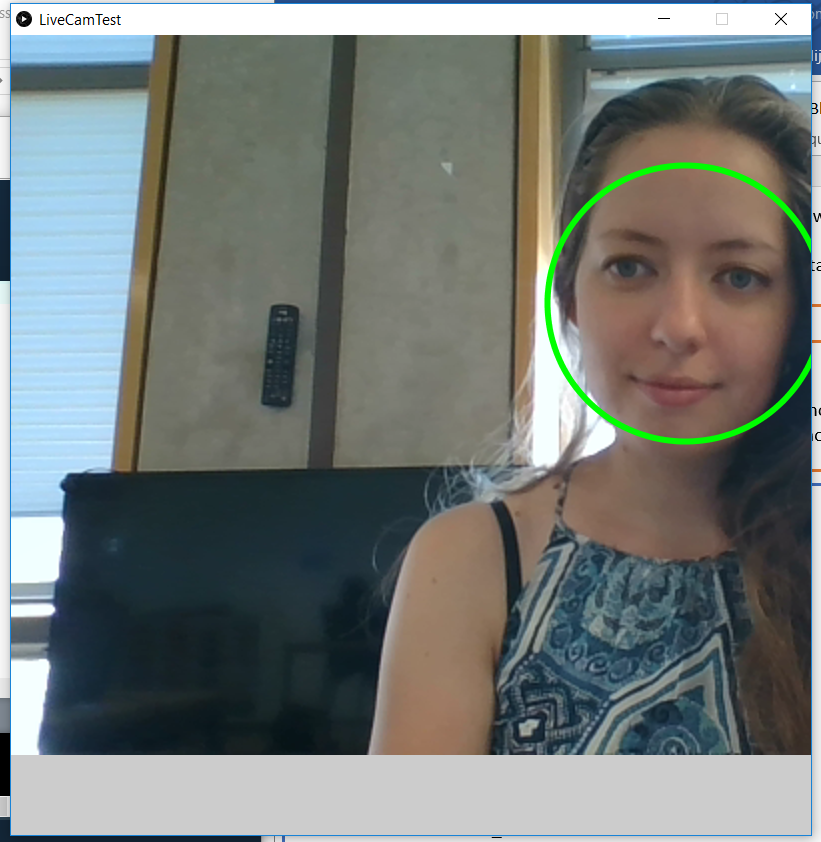
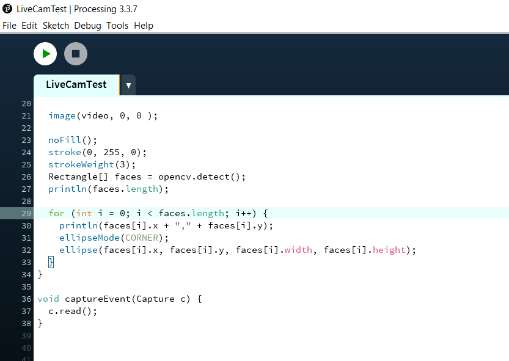
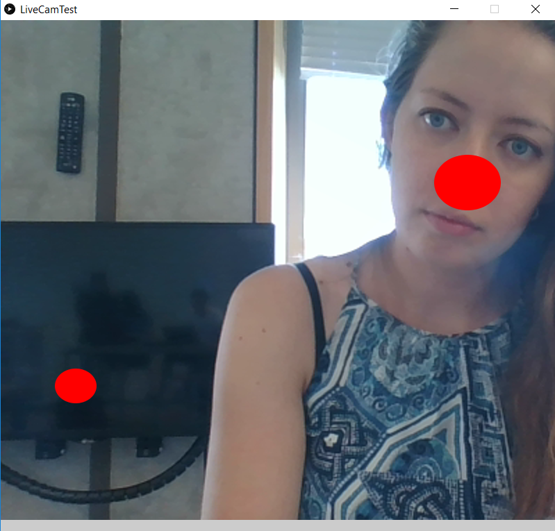
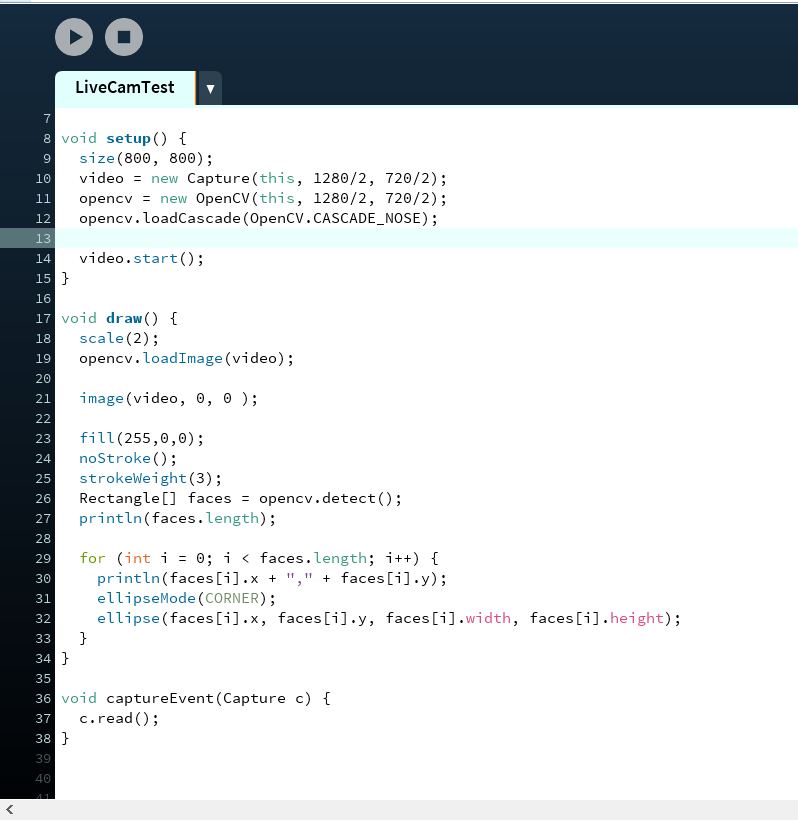

Voordat u start met de hele pagina door te lezen opzoek naar dat wat relevant is voor u,
laat mij helpen! Voor de assigments voor Proccesing naar Assignments.
Is dat toch niet wat u zoekt, maar wilt u zien hoe ik uit de voeten ben gekomen met Computer Vision? Ga dan naar Vision.
Als laatst heb ik nog een reflectie geschreven die u nog wel zou willen lezen, ga dan naar mijn reflectie.
The assigments
Assignment 1
Maak minimaal drie verschillende circels met allemaal andere kleuren, afmetingen en plaatsing.

De gebruikte code hiervoor.

Assigment 2
Maak minimaal vier verschillende figuren met allemaal andere kleuren, afmetingen en plaatsing.

De gebruikte code hiervoor.

Assigment 3
Maak minimaal twee verschillende figuren die de muis volgen.

De gebruikte code hiervoor.

Computer Vision
Vision
Assigment 1
Maak met FRONTALFACE in plaats van een rechthoeke een circel om het hoofd heen.

De gebruikte code hiervoor.

Assigment 2
Maak met EYE in plaats van een rode clownneus of een zwart balkje voor de ogen.

De gebruikte code hiervoor.

Assigment 3
Verander de code zodat er iets cools gebeurt
Processing is voor mij geheel iets nieuws geweest. Ik had er nog nooit van gehoord en ik had ook geen idee wat ik ermee kon doen en moest doen.
Het concept van Computer Vision kon ik mij eerder in vinden, al had ik er niet bewust van gehoord. Het deed mij eerder denken aan AI en dat is iets waar ik mij nog in wil verdiepen.
Voor de opdracht kon ik de context van Computer Vision nog wel begrijpen.
Processing
Zoals ik aangaf was voor mij Processing iets nieuws. Ik had wat moeite met het opstarten en mij een weg te vinden in het programma, maar dankzij heldere stappen die ik moest nemen kwam ik aardig ver.
Er waren wel onderdelen waar ik wat moeite mee had om dit bij de eerste keer te begrijpen, maar na nog een aantal keer doorlezen en vragen kwam ik ook hier uit.
Computer Vision
Dankzij het starten met Processing was het toepassen van onderdelen in het codeerprogramma nog wel te doen.
Ook hierin ben ik goed ondersteund door de reader wanneer ik er niet uitkwam, maar Google heeft ook goed geholpen met basic vragen.
Verbeterpunten en wat ging er goed?
In het vervolg wil ik niet laconiek reageren bij het ontvangen van een nieuwe manier van programmeren.
Ik weet goed dat dit alleen is om mij beter te helpen ontwikkelen in het vakgebied, maar ik ben mij ervan bewust dat programmeren niet mijn sterkste kwaliteit is.
Mijn reactie is om een bepaalde manier te reageren is om mijzelf te “beschermen”, maar ik ben mij ervan bewust dat dit niet hoeft. Zeker niet in een veilige omgeving van een klaslokaal.
Wat er goed ging, was dat ik aardig door de opdrachten heen ging. Ook stelde ik vragen wanneer dit nodig was. Vragen aan de docent, klasgenoten of Google.
Mijn doorzettingsvermogen en wil om nieuwe dingen te leren, zorgen ervoor dat ik wel ervoor ga.